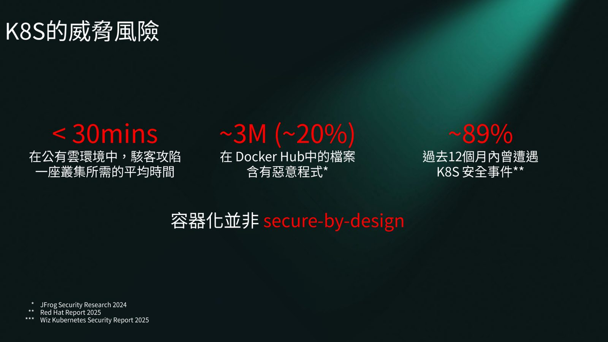
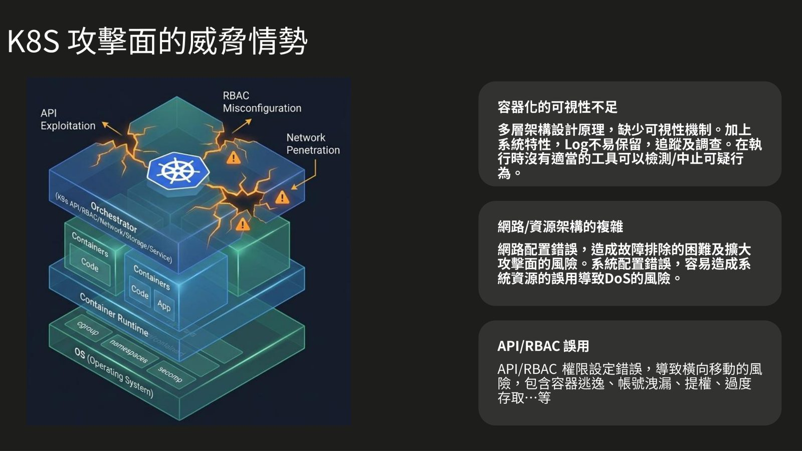
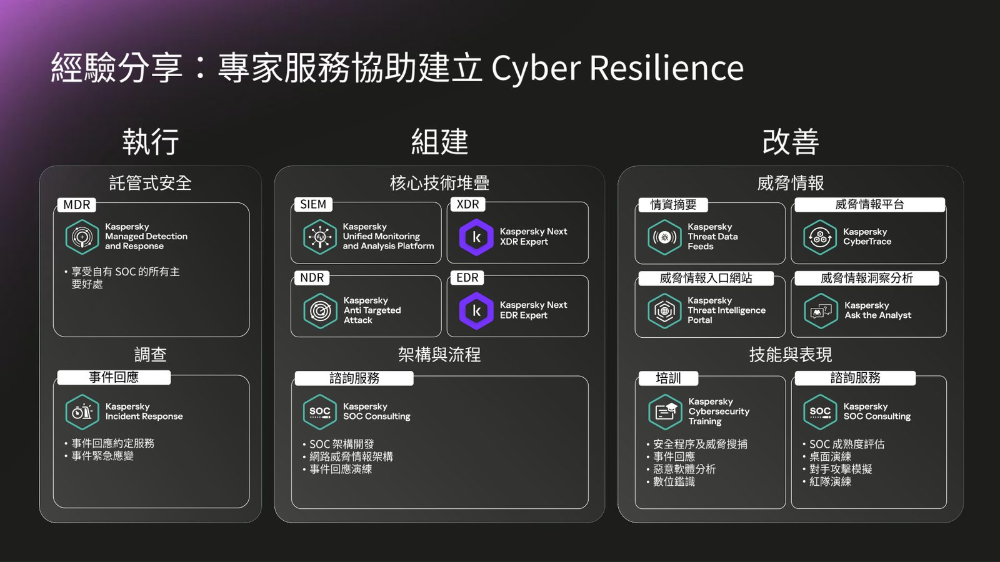
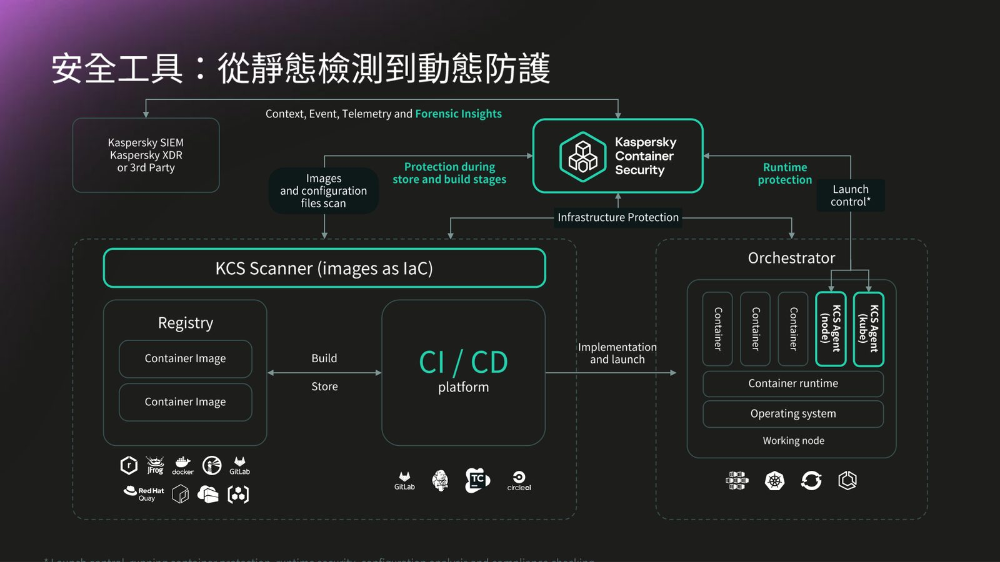

摘要
本演講針對公有雲中 Kubernetes（K8S）叢集面臨的嚴峻安全威脅（平均不到 30 分鐘即可能被攻陷，近九成企業曾遭遇安全事件），探討如何透過 AI 與威脅情報建構容器的運行時安全（Runtime Security）。卡巴斯基台灣技術總監謝長軒剖析了 K8S 的三大核心攻擊面：API/RBAC 權限設定錯誤、網路與資源複雜度，以及容器內部可視性不足。在 AI 時代下，自動化漏洞利用與模型資料投毒使攻擊頻率與規模呈倍數放大。對此，演講介紹了卡巴斯基結合全球情資的機器學習偵測引擎，並提出以 Kaspersky Container Security（KCS）為核心的防護架構，涵蓋從 Store/Build 階段的靜態映像檔與 IaC 掃描，到 Runtime 階段的 Admission Control 阻擋與 Launch Control 防護。本演講為企業實現從左移開發安全到右移運行時防禦的完整 Cyber Resilience 提供了具體實踐指引。
重點整理
- 在公有雲環境中，駭客攻陷一座 K8S 叢集平均僅需不到 30 分鐘，近 89% 企業過去 12 個月曾遭遇 K8S 安全事件
- K8S 攻擊面三大威脅：API/RBAC 權限誤用、網路與資源架構複雜、容器化可視性不足
- AI 時代威脅情勢產生質變：攻擊日常化、針對 AI 模型的資料投毒與提示注入成為新型態威脅，掃描與漏洞利用速度遠超人工防禦
- 卡巴斯基威脅情報整合 Web crawlers、Spam traps、Sensors、Passive DNS 等多元來源，並在網路安全測試中提升 FortiGate、Palo Alto 偵測率逾 45%
- Kaspersky Container Security（KCS）提供從映像檔掃描（Store/Build 階段）到 Runtime 防護（Admission Control、Launch Control）的完整容器安全架構
重點圖片／架構圖




Kubernetes 的威脅風險現況
講者引用多份產業報告指出 K8S 環境面臨的嚴峻風險：Wiz Kubernetes Security Report 2025 顯示公有雲環境中駭客攻陷一座叢集平均僅需不到 30 分鐘；Red Hat Report 2025 指出近 89% 企業在過去 12 個月內曾遭遇 K8S 安全事件；JFrog Security Research 2024 則發現 Docker Hub 中約 20%（近 300 萬個）檔案含有惡意程式，說明容器化並非「secure-by-design」。
K8S 攻擊面與供應鏈攻擊
K8S 攻擊面的威脅情勢可歸納為三類：API/RBAC 權限設定錯誤導致橫向移動、容器逃逸與提權風險；網路與資源架構複雜造成故障排除困難與攻擊面擴大；以及容器化多層架構下的可視性不足，導致 Log 難以保留與追蹤。此外，講者也說明軟體供應鏈攻擊如何從開發人員、程式庫、編譯、軟體發佈區一路滲透，最終影響到最終用戶。
AI 時代的威脅情勢變化
講者強調 AI 並未改變資安的本質，但放大了攻擊的速度、規模與攻擊面：初級駭客能利用 GenAI 生成高階惡意代碼與精準釣魚郵件，攻擊頻率從「週期性」轉為「全年無休」；針對 AI 模型的資料投毒（Poisoning）與提示注入（Injection）攻擊已成為常態；同時 AI 掃描漏洞的速度也遠超人工防禦，使自動化漏洞利用成為新常態。
卡巴斯基威脅情報與機器學習偵測
卡巴斯基透過遍布全球的 Web crawlers、Spam traps、Sensors、Passive DNS、KSN 與合作夥伴等多元來源蒐集威脅情報，並以機器學習模型分析每日數萬筆偵測到的檔案與網路釣魚網頁。測試數據顯示，導入 Kaspersky Network Security Threat Data Feed 可將 Palo Alto 與 FortiGate 防火牆的威脅偵測效率分別提升約 47.9% 與 52.3%，並可透過 SIEM/SOAR、Threat Intelligence Platform 等多種安全平台彈性整合使用。
容器安全工具與 K8S 韌性建議
Kaspersky Container Security（KCS）涵蓋從 Store 與 Build 階段的映像檔／IaC 掃描，到 Runtime 階段的 Admission Control（審核並阻擋不合規映像檔）與 Launch Control（執行中容器防護與合規檢查），並可將偵測到的情境、事件與遙測資訊整合進 Kaspersky SIEM／XDR 或第三方平台。最後講者建議企業應盤點安全邊界與權限管理、導入可提高可視性的威脅情報源、升級 AI 檢測工具，並定期進行情報驅動的安全演練。